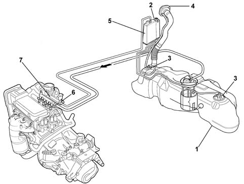
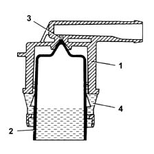
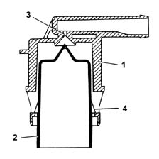
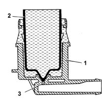
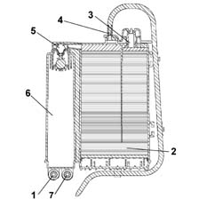
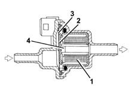
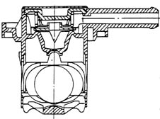
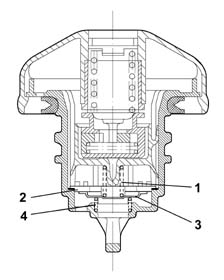

1080E evaporation control system
- Path
- Descriptions > 10 ENGINE > 1080 EXHAUST EMISSION CONTROL SYSTEM > 1080E evaporation control system
- Kind
- system description
- Applies to
- engines: 1.1, 1.2 8v; all production periods
- Interactive page
- https://sloeber94.github.io/elrnDB-fPnd/en/#/2750893
Applies to: engines: 1.1, 1.2 8v; all production periods
The evaporation control system prevents fuel vapours, i.e. the lighter hydrocarbon fractions that build up mainly in the tank, from escaping into the atmosphere.
Applies to: engines: 1.1, 1.2 8v; all production periods
The system consists of a tank, a vapour separator, two float valves, a two way ventilation valve inside the fuel filler cap, a carbon filter and a carbon filter flushing solenod controlled by the control unit.
Applies to: engines: 1.1, 1.2 8v; all production periods
The system operates mainly at high external temperatures when fuel temperature increases and the tendency to evaporate also increases: pressure rises inside the tank under these circumstances.
In particular, even with tank (1) full, the two float valves (3) remain open because they are situated higher than the vent pipe. They therefore always allow fuel vapours to reach separator (2) and prevent fuel from emerging
Fuel vapours reach carbon filter (6) when the pressure inside the tank causes ventilation valve (8) to open.
This valve also allows air to be taken into the tank through the carbon filter if this is necessary following a drop in fuel level.
When the engine is running, the control unit controls the carbon filter flushing solenoid, which allows vapour to be taken in by the engine and thus flushing of the carbon filter.
If pressure inside the tank increases to dangerous levels due to component malfunction, the pressure relief valve in cap (4) allows pressure to be vented to the outside.
If necessary, this valve can open in the opposite direction to ventilate the tank and prevent the vacuum from reaching excessive levels.

1, Fuel tank 2, Fuel vapour separator with multifunction valve 3, Float valves 4, Plug with pressure relief valve 5, Canister active charcoal filter 6, Active charcoal filter flushing solenoid valve 7, Intake manifold
Applies to: engines: 1.1, 1.2 8v; all production periods
Float valve
These valves are used for carrying out the following functions:
- preventing the escape of liquid fuel in the case of an accident where the vehicle overturns;
- allowing the breathing of fuel vapours from the tank to the separator and therefore to the activated charcoal filter;
- allowing the ventilation of the tank if there is a vacuum inside.
This valve consists of a body (1) and a float/needle valve (2).
The operation of the valve can be summarized in the following cases in relation to how full the fuel tank is.
Applies to: engines: 1.1, 1.2 8v; all production periods
Tank full
If the tank is full, the float (2) shutters the port (3) preventing the liquid fuel from reaching the separator.

Applies to: engines: 1.1, 1.2 8v; all production periods
Intermediate fuel level
If the level of the fuel in the tank decreases, the float (2) descends and rests via the side tabs (4) on the slits in the valve body (1) opening the port (3), which can be reached by the gases through the ring section between the float (2) and the valve body (1) inner seat. This allows the fuel vaopurs to escape from the tank and reach the separator and the activated charcoal filter, or through the same circuit to ventilate the tank when the pressure inside is below the pressure outside.

Applies to: engines: 1.1, 1.2 8v; all production periods
Seal in the event of roll-over
If the vehicle overturns, irrespective of how full the tank is, the float (2), weighing down with its own weight and that of the fuel on the port (3), prevents the dangerous flow of fuel to the activated charcoal filter and the consequent risk of the vehicle catching fire.

Applies to: engines: 1.1, 1.2 8v; all production periods
SPECIFCATIONS
This vehicle is equipped with an active charcoal filter which incorporates the vapour/liquid separator.
The canister has the task of absorbing the fuel vapours coming from the tank.
It is fitted in the right rear wheel arch and consists of a vegetable type active charcoal filter element.
A one-way valve allows the entry of external (scavenging) air which comes into contact with the carbon granules, removing the petrol vapours and directing to the inlet manifold when the fuel vapour solenoid valve is open.
The vapour/liquid separator is designed to ensure the separation of the liquid and gaseous parts of the fuel, reintroducing the liquid into the tank via a suitable pipe.

1, Vapours from the tank 2, Vegetable active charcoal 3, Breather opening 4, To the intake manifold 5, Continuous breather (multifunction) ventilation valve 6, Vapour/liquid separator 7, Liquid return to the tank
Applies to: engines: 1.1, 1.2 8v; all production periods
Specifications
This is directly on the modular inlet manifold, and is controlled by the fuel injection control unit.
The function of the solenoid is to allow fuel vapours stored in the engine intake canister through to the engine intake.
If there is no supply the solenoid valve is in the closed position, preventing the fuel vapours from enriching the mixture too much.
Applies to: engines: 1.1, 1.2 8v; all production periods
Operation
The solenoid valve is operated by the engine management control unit according to a specific strategy (see 1056)
When energized, the electromagnet (1) attracts the shutter (2), which overcomes the load of the flat spring (3) and closes the hole (4), preventing the passage of fuel vapours.

Applies to: engines: 1.1, 1.2 8v; all production periods
Multifunction VALVE
The valve functions are:
- pressurizing the tank
- retention
- seal in the event of roll-over

Applies to: engines: 1.1, 1.2 8v; all production periods
Pressurizing the tank
The tank is maintained at a pressure of 30-45 mbar by means of a fluorosilicone rubber valve, which rests on a sealing edge.
The valve is supported by a stainless steel plate and counteracted by a spring.
When the pressure in the tank exceeds the specified value, it overcomes the resistance of the spring and the valve is able to open, allowing vapours to flow to the canister.
When the pressure returns to the correct limits, the valve closes again.
Applies to: engines: 1.1, 1.2 8v; all production periods
retaining
Under particular driving conditions, a vacuum could be created in the tank because of:
- temperature changes
- fuel consumption.
In this case, the valve's function is to restore the pressure of the tank by allowing outside air in.
A fault in this function could cause the engine to miss or stall, because of difficulties in supplying the fuel pump.
This function is carried out by the 'goose beak' valve formed directly out of the fluorosilicone rubber.
Applies to: engines: 1.1, 1.2 8v; all production periods
Seal in the event of roll-over
The roll-over function prevents fuel from leaking from the tank if the vehicle overturns or is on a very steep slope.
During normal driving of the vehicle (bends, acceleration, braking, etc.), the fuel is shaken up and may spill into the canister.
The car's high roll-over sensitivity prevents this spillage.
The roll-over closure angle is less than 33°.
Applies to: engines: 1.1, 1.2 8v; all production periods
Operation
This valve is built into the fuel filler cap, and it carries out the following functions, depending on the pressure present in the tank:
- it discharges to the outside any surplus pressure which is created inside the tank (safety function); the pressure acts on the plate (2) and, overcoming the load of the spring (1), allows the surplus vapours to be discharged to the outside.
- it allows external air to flow into the tank when an excessive vacuum is created in the tank, following the consumption of fuel (ventilation function). In this case, when the vacuum exceeds the load of the spring (4), it moves the valve (3), allowing air to enter.
